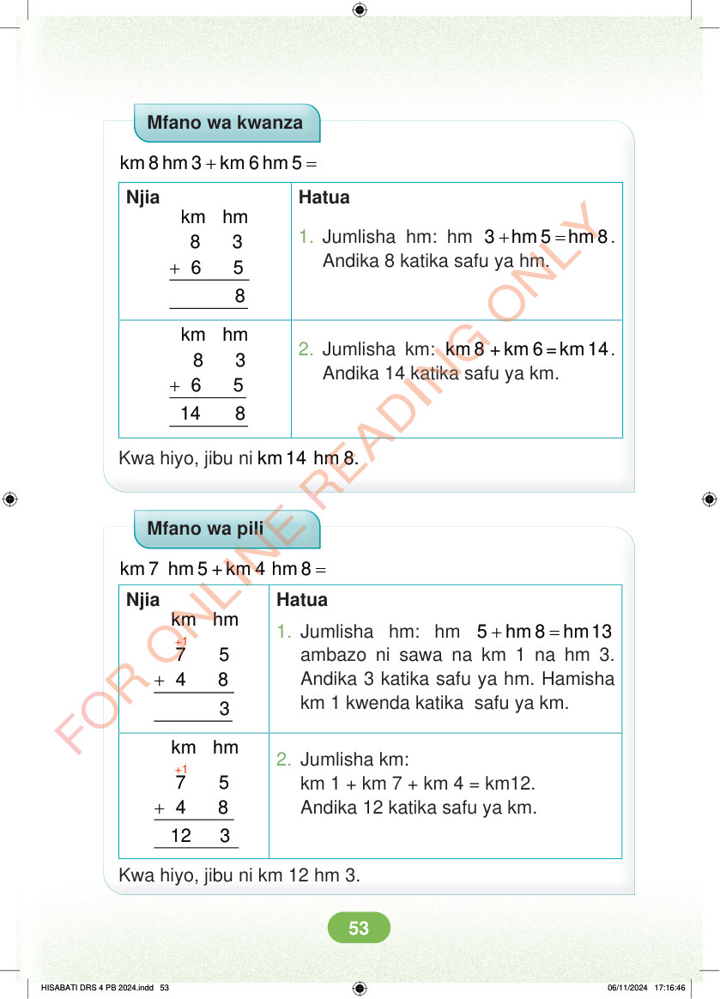

Mfano wa kwanza + = km 8 hm 3 km 6 hm 5 Njia Hatua 1. Jumlisha hm: hm + = 3 hm 5 hm 8. Andika 8 katika safu ya hm. + km hm 8 3 6 5 2. Jumlisha km: km 8 + km 6 = km 14. Andika 14 katika safu ya km. + km hm 8 3 6 5 14 8 Kwa hiyo, jibu ni km 14 hm 8. Mfano wa pili + = km 7 hm 5 km 4 hm 8 Njia Hatua +1 km hm + 7 5 4 8 1. Jumlisha hm: hm + = 5 hm 8 hm 13 ambazo ni sawa na km 1 na hm 3. Andika 3 katika safu ya hm. Hamisha km 1 kwenda katika safu ya km. +1 km hm + 2. Jumlisha km: km 1 + km 7 + km 4 = km12. Andika 12 katika safu ya km. 7 5 4 8 12 3 Kwa hiyo, jibu ni km 12 hm 3. HISABATI DRS 4 PB 2024.indd 53 HISABATI DRS 4 PB 2024.indd 53 06/11/2024 17:16:46 06/11/2024 17:16:46